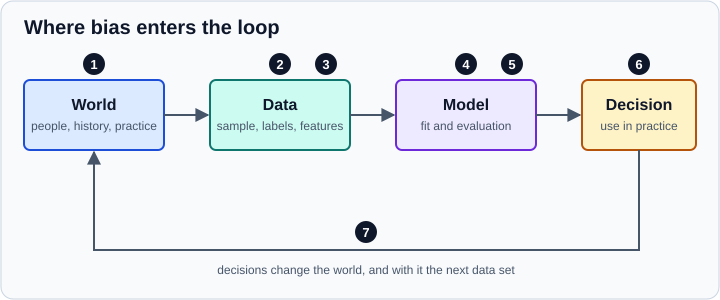

Ethics, Privacy & Responsible Data Use
|
This content was generated with the assistance of AI and should be verified against the official documentation before being relied on in production. |
Data science works on records about people, and its outputs decide who is offered a loan, shown an advertisement, flagged for review or treated first. Ethical practice here is not an add-on at the end of a project: the choices that matter (what to collect, which label to predict, who is in the sample, how errors are distributed) are made while the data is being prepared and the model built.
This page is about the data side: where the data comes from and on what basis it may be used, how to reduce what you hold, how bias enters and is measured, and how to document what you built. It is not legal advice; laws differ by country, sector and use, and a data protection officer or lawyer should confirm the specifics of a project. Examples target Python 3.13 or 3.14 and were run on Python 3.13. They use pandas 3.1, scikit-learn 1.9 and Fairlearn 0.15, and were run on those versions; the legal sources were checked in October 2026.
Governance of AI systems as a whole (risk management frameworks, regulation of models and agents, security) is covered elsewhere and linked rather than repeated: Responsible AI Practices, NIST AI Risk Management Framework, EU AI Act and Sensitive Information and Hidden Context. For the model-measurement side, see Model Evaluation & Validation, and for provenance and records, Reproducibility & MLOps Basics.
Start with the purpose and the people affected
Before collecting or reusing data, answer in writing:
-
What decision or question is this analysis for, and who is affected by the result?
-
Is a model the right tool, and what happens when it is wrong? Who bears the cost of false positives and false negatives?
-
Which data is really needed for that purpose, and which is merely available?
-
Who is represented in the data, who is missing, and who might be harmed by being misrepresented?
-
On what legal and ethical basis may this data be used for this purpose, and would the people concerned expect it?
-
How will you detect and correct problems after deployment, and who is accountable?
These questions feed the framing step of the data science workflow; revisit them whenever the purpose changes.
Personal data, consent and lawful basis
Personal data in the EU General Data Protection Regulation (GDPR, Regulation (EU) 2016/679) is any information relating to an identified or identifiable natural person (Article 4). It is broader than names: identifiers such as e-mail addresses, device and cookie identifiers, location traces, and combinations of ordinary attributes (age, postcode, occupation) can identify someone. Anything about a person who can be singled out, even without a name, should be treated as personal data until you have a reasoned argument otherwise.
The GDPR applies to organisations established in the EU and to those offering goods or services to, or monitoring, people in the EU. Other regimes work differently (for instance, HIPAA’s de-identification rules for health information in the United States and state privacy laws such as California’s), but the practical principles below transfer well.
Principles that shape a data project
Article 5 lists the principles of processing. Their consequences for data scientists:
| Principle | What it means in a data science project |
|---|---|
Lawfulness, fairness and transparency |
There must be a lawful basis, the processing must not be unjustifiably harmful or misleading, and people must be told how their data is used. |
Purpose limitation |
Data collected for one purpose is not freely reusable for another. Further processing for scientific research or statistical purposes is treated as compatible, provided the safeguards of Article 89 (such as data minimisation and pseudonymisation) are in place. Training a commercial model on data collected for customer service is not automatically compatible. |
Data minimisation |
Collect and keep only what is adequate, relevant and limited to the purpose. Do not collect "just in case" columns, and drop identifiers that the analysis does not need. |
Accuracy |
Keep data correct and up to date. Errors and stale records lead to wrong decisions about real people. |
Storage limitation |
Keep identifiable data no longer than necessary. Set retention periods for raw extracts, intermediate files and model-training snapshots. |
Integrity and confidentiality |
Protect against unauthorised access and loss: access control, encryption, secure transfer, and care with shared notebooks and bucket permissions. |
Accountability |
You must be able to demonstrate compliance: records of processing, impact assessments, documented decisions. |
Choosing a lawful basis
Article 6(1) allows processing only if at least one basis applies: consent, performance of a contract, a legal obligation, protecting vital interests, a task in the public interest, or legitimate interests (balanced against the person’s rights). The basis must be chosen before processing starts and documented, and it determines which rights apply.
-
Consent must be freely given, specific, informed and unambiguous (Article 4(11)) and can be withdrawn at any time (Article 7(3)). Consent buried in terms of service, bundled with unrelated purposes, or given where the person has no real choice (for example an employee asked by their employer) is weak. If consent is your basis, the pipeline must be able to remove a person’s data when it is withdrawn.
-
Legitimate interests need a documented balancing test, and are not available where the person’s rights override them.
-
Public-interest research, statistics and archiving have specific provisions (Article 89 and national law).
Special categories (Article 9) are racial or ethnic origin, political opinions, religious or philosophical beliefs, trade-union membership, genetic data, biometric data used for identification, health data and data about sex life or sexual orientation. Their processing is prohibited unless a specific exception applies (such as explicit consent or scientific research with safeguards). Inferring them is also processing them: a model that predicts health conditions or ethnicity from other data creates special-category data.
Rights that reach into data science work
-
Access, rectification and erasure (Articles 15 to 17): people can ask what you hold and to have it corrected or deleted. Plan for it: keep a way to find a person’s rows across raw data, features and snapshots. How erasure applies to a model already trained on the data is an open and context-dependent question; do not promise that a model "forgets" without evidence.
-
Objection and restriction (Articles 18 and 21).
-
Automated decision-making (Article 22): people have the right not to be subject to a decision based solely on automated processing that produces legal or similarly significant effects, with exceptions that come with safeguards such as human intervention and the ability to contest. A model that scores loan applications or job candidates with no human review is the typical case.
-
Data protection by design and by default (Article 25), and a data protection impact assessment (Article 35) when processing is likely to result in high risk, which large-scale profiling usually is.
The EU AI Act (Regulation (EU) 2024/1689) adds obligations on data governance and bias examination for providers of high-risk AI systems, with application dates phasing in after its entry into force in August 2024; the details and timing are on the EU AI Act page and should be checked against the current text.
Reducing what you hold
Minimise first
The cheapest protection is not holding the data. Drop direct identifiers (name, e-mail, phone, national ID, free-text notes) as early as possible, keep only the columns the analysis needs, aggregate when individual records are not required, coarsen precision (age bands rather than birth dates, postcode prefixes rather than full postcodes, timestamps to the hour), and delete raw extracts when they are no longer needed. Sensitive attributes needed only for fairness auditing can be stored separately from the training features with restricted access.
Pseudonymisation versus anonymisation
These two words are often used loosely, but they have different legal consequences.
-
Pseudonymisation (Article 4(5)) replaces identifiers with a code so that the data can no longer be attributed to a person without additional information, which is kept separately and protected. Pseudonymised data is still personal data: the GDPR still applies, but pseudonymisation is a recognised safeguard that lowers risk.
-
Anonymisation produces data that no longer relates to an identifiable person, taking into account all the means reasonably likely to be used to identify them (Recital 26). Truly anonymous data falls outside the GDPR, but the bar is high and is judged against the data that others hold and the techniques available, not just against your own copy.
A model or an aggregate can also leak personal data: models can memorise training records, and small-cell aggregates can reveal individuals. Treat "anonymised" as a claim to be tested (can a record be singled out, linked to another data set, or inferred?), not a label to apply.
The following example shows two facts that surprise people. A plain hash of a low-entropy identifier is not protected by any key: it can be reversed by trying every possible value. A keyed hash (HMAC) with a secret that is stored separately is a proper pseudonymisation technique. The second part measures how identifying the remaining attributes still are and how generalisation helps.
import hashlib, hmac, os
import numpy as np
import pandas as pd
rng = np.random.default_rng(1)
n = 2000
df = pd.DataFrame({
"patient_id": [f"{i:05d}" for i in rng.choice(100000, size=n, replace=False)],
"zip": rng.choice([f"{z}" for z in range(28001, 28041)], size=n),
"age": rng.integers(18, 90, size=n),
"sex": rng.choice(["F", "M"], size=n),
"diagnosis": rng.choice(["flu", "asthma", "diabetes", "none"], size=n, p=[0.3, 0.2, 0.1, 0.4]),
})
# 1. Pseudonymisation: a plain hash of a low-entropy identifier can be reversed by trying every value
plain = df["patient_id"].map(lambda s: hashlib.sha256(s.encode()).hexdigest())
lookup = {hashlib.sha256(f"{i:05d}".encode()).hexdigest(): f"{i:05d}" for i in range(100000)}
print("plain SHA-256 reversed:", (plain.map(lookup) == df["patient_id"]).mean())
# a keyed hash (HMAC) needs the secret key; keep the key apart from the data
key = os.urandom(32)
df["pseudo_id"] = df["patient_id"].map(lambda s: hmac.new(key, s.encode(), hashlib.sha256).hexdigest()[:16])
print(df["pseudo_id"].head(2).tolist())
df = df.drop(columns="patient_id")
# 2. k-anonymity: how many rows share each combination of quasi-identifiers?
def k_of(frame, cols):
sizes = frame.groupby(cols, observed=True).size()
return int(sizes.min()), int((sizes == 1).sum())
qi = ["zip", "age", "sex"]
print("raw : k=%d, unique rows=%d of %d" % (*k_of(df, qi), len(df)))
gen = df.assign(zip=df["zip"].str[:4] + "*",
age=pd.cut(df["age"], bins=[17, 29, 44, 59, 74, 120],
labels=["18-29", "30-44", "45-59", "60-74", "75+"]))
print("generalised : k=%d, unique rows=%d of %d" % (*k_of(gen, qi), len(gen)))Output (the two pseudonyms differ on every run because the key is random):
plain SHA-256 reversed: 1.0 ['b252ff38540c1041', '65921e3bf25e432e'] raw : k=1, unique rows=1396 of 2000 generalised : k=2, unique rows=0 of 2000
Source: Python documentation: hmac and GDPR Article 4: definitions. The generalisation uses pandas.cut.
All 2,000 plain hashes were reversed, because only 100,000 identifiers exist. The raw table has 1,396 rows (70 percent) that are unique on postcode, age and sex alone, so anyone who knows those three facts about a person can find their diagnosis. After generalising to postcode prefix and age band every group has at least 2 members (k-anonymity with k=2), which is still weak: k-anonymity does not protect against everyone in a group sharing the same diagnosis (homogeneity) or against an attacker with extra knowledge, and larger k, l-diversity or t-closeness, or formal approaches such as differential privacy (for example with the OpenDP library), are used for stronger guarantees. High-dimensional data, free text, location traces and images are very hard to anonymise: assume re-identification is possible and control access instead.
The European guidance on these topics is the Article 29 Working Party’s Opinion 05/2014 on anonymisation techniques and the European Data Protection Board’s 2025 guidelines on pseudonymisation (listed in the references).
Bias: where it comes from
"Bias" covers several different problems, and naming the kind tells you what to do about it. Suresh and Guttag’s framework of sources of harm throughout the machine learning life cycle is a useful map; the figure marks where each enters the loop from world to data to model to decision and back.

-
Historical bias (marker 1): the world itself is unequal, so perfectly accurate data reproduces the inequality. A hiring model trained on past hires learns past hiring practice.
-
Sampling or representation bias (marker 2): some groups are under- or over-represented, for example because data comes from an app that only some people use, a survey with non-response, or a convenience sample. Models are less accurate for groups with few examples.
-
Measurement and label bias (marker 3): the quantity you can measure is a proxy for what you care about (arrests for crime, spending for need, clicks for interest), and the proxy may differ by group; labels may come from biased human decisions.
-
Proxy and representation bias in features and models (marker 4): leaving out a sensitive attribute does not remove its influence, because other features (postcode, school, shopping history) correlate with it. Aggregating groups into one model can fit the majority and fail minorities.
-
Evaluation bias (marker 5): test data or benchmarks that do not represent the people the model is used on, or a single overall metric that hides group differences.
-
Deployment bias (marker 6): a model is used for a different population or purpose than it was built for, or its output is over-trusted by people.
-
Feedback loops (marker 7): decisions change the world (patrol where the model predicts crime and you record crime there), and the new data reinforces the model.
A quick check of representation compares the sample with a reference population (a census, a customer base). A second quick check, before a data set is shared, scans text columns for personal data that should not be there:
import pandas as pd
# 1. Representation: compare the sample with a reference population
sample = pd.Series(["urban"] * 820 + ["rural"] * 180, name="area")
population = pd.Series({"urban": 0.60, "rural": 0.40})
share = sample.value_counts(normalize=True)
report = pd.DataFrame({"sample": share, "population": population})
report["ratio"] = (report["sample"] / report["population"]).round(2)
print(report)
# 2. A quick scan for columns that look like personal data before sharing a file
df = pd.DataFrame({
"note": ["call me at +34 600 123 456", "ok", "mail ana@example.org"],
"city": ["Madrid", "Bilbao", "Vigo"],
})
patterns = {"email": r"[\w.+-]+@[\w-]+\.[\w.]+", "phone": r"\+?\d[\d ]{7,}\d"}
for col in df.select_dtypes(include=["object", "string"]):
for name, pat in patterns.items():
hits = df[col].str.contains(pat, regex=True, na=False).sum()
if hits:
print(f"column {col!r}: {hits} value(s) look like {name}")
print(df.dtypes.astype(str).to_dict())Output:
sample population ratio
urban 0.82 0.6 1.37
rural 0.18 0.4 0.45
column 'note': 1 value(s) look like email
column 'note': 1 value(s) look like phone
{'note': 'str', 'city': 'str'}
The sample contains 82 percent urban respondents against 60 percent in the population, so rural people are heard at under half their weight (ratio 0.45). Reweighting, collecting more data from the under-represented group, or limiting claims to the represented population are the usual responses. The scan is deliberately crude (regular expressions miss names and addresses) and is a reminder to review files, not a guarantee. Note the dtype list: in pandas 3 string columns have the str dtype, so pass "str" or "string" in addition to "object" to select_dtypes; passing only "object" still selects them for now but emits a deprecation warning.
Measuring fairness
There is no single definition of fairness; the choice is a judgement about the decision and its context, and different definitions can contradict each other. The common group-fairness criteria compare model outputs across groups defined by a sensitive feature (sex, age band, ethnicity, disability, and so on):
| Criterion | Meaning | Fairlearn measure |
|---|---|---|
Demographic parity (statistical parity) |
The share of positive predictions (the selection rate) is the same in every group. |
|
Equalised odds |
True-positive and false-positive rates are equal across groups: the model errs equally for people who qualify and for those who do not. |
|
Equal opportunity |
Only the true-positive rates are equal: qualified people have the same chance in every group. |
The TPR column of a |
Predictive parity and calibration by group |
A given score means the same probability of the outcome in every group. |
Calibration curves per group; |
When the base rate of the outcome differs between groups, and the model is not perfect, these criteria cannot all hold at once (Kleinberg, Mullainathan and Raghavan, 2016; Chouldechova, 2017). Choosing which to prioritise is an ethical and legal decision, not a technical one, and should involve the people who know the context. Rules of thumb such as the "four-fifths rule" used in United States employment practice (a selection rate for a group below 80 percent of the highest group’s rate is treated as evidence of adverse impact) are screening heuristics with their own legal context, not definitions of fairness.
Auditing with Fairlearn
Fairlearn is an open-source library for assessing and improving fairness. Its MetricFrame computes any metric overall and per group, and reports the largest difference or ratio between groups. The example builds synthetic data in which the historical approvals were harsher for group B and a neighbourhood feature leaks group membership. The model never sees the group column, yet its predictions differ by group.
import numpy as np
import pandas as pd
from fairlearn.metrics import (MetricFrame, demographic_parity_difference, equalized_odds_difference,
selection_rate, true_positive_rate, false_positive_rate)
from fairlearn.postprocessing import ThresholdOptimizer
from sklearn.linear_model import LogisticRegression
from sklearn.metrics import accuracy_score
from sklearn.model_selection import train_test_split
rng = np.random.default_rng(0)
n = 20000
group = rng.choice(["A", "B"], size=n, p=[0.7, 0.3])
skill = rng.normal(size=n) # what we would like to measure
credit_score = skill + rng.normal(scale=0.8, size=n) # noisy measurement of skill
neighbourhood = (group == "B") + rng.normal(scale=0.7, size=n) # a proxy that leaks group membership
# historical decisions were harsher for group B at the same skill
approved = (skill - 0.8 * (group == "B") + rng.normal(scale=0.5, size=n) > 0).astype(int)
X = pd.DataFrame({"credit_score": credit_score, "neighbourhood": neighbourhood})
X_tr, X_te, y_tr, y_te, g_tr, g_te = train_test_split(X, approved, group, test_size=0.4, random_state=0)
model = LogisticRegression().fit(X_tr, y_tr) # the sensitive attribute is NOT a feature
pred = model.predict(X_te)
mf = MetricFrame(
metrics={"accuracy": accuracy_score, "selection_rate": selection_rate,
"TPR": true_positive_rate, "FPR": false_positive_rate},
y_true=y_te, y_pred=pred, sensitive_features=g_te,
)
print(mf.by_group.round(3))
print("demographic parity difference:", round(demographic_parity_difference(y_te, pred, sensitive_features=g_te), 3))
print("equalized odds difference :", round(equalized_odds_difference(y_te, pred, sensitive_features=g_te), 3))
to = ThresholdOptimizer(estimator=model, constraints="demographic_parity",
objective="accuracy_score", predict_method="predict_proba", prefit=True)
to.fit(X_tr, y_tr, sensitive_features=g_tr)
pred_to = to.predict(X_te, sensitive_features=g_te, random_state=0)
mf2 = MetricFrame(metrics={"accuracy": accuracy_score, "selection_rate": selection_rate},
y_true=y_te, y_pred=pred_to, sensitive_features=g_te)
print(mf2.by_group.round(3))
print("after ThresholdOptimizer, DP difference:", round(demographic_parity_difference(y_te, pred_to, sensitive_features=g_te), 3),
"overall accuracy:", round(accuracy_score(y_te, pred_to), 3), "(before:", round(accuracy_score(y_te, pred), 3), ")")Output:
accuracy selection_rate TPR FPR
sensitive_feature_0
A 0.723 0.410 0.631 0.183
B 0.781 0.312 0.695 0.192
demographic parity difference: 0.098
equalized odds difference : 0.064
accuracy selection_rate
sensitive_feature_0
A 0.723 0.406
B 0.723 0.425
after ThresholdOptimizer, DP difference: 0.019 overall accuracy: 0.723 (before: 0.74 )
Source: Fairlearn: assessment and Fairlearn: mitigation
Install Fairlearn with pip install fairlearn (version 0.15.0 was used). Read the output as follows. Although the group was removed from the features, group B is selected 31 percent of the time against 41 percent for group A (demographic parity difference 0.098), because the neighbourhood proxy carries the group signal and the model has learned from historical decisions that were harsher on B. Accuracy is actually higher for B, which shows why a single overall accuracy figure hides the gap: a model can look good on average and treat groups differently. ThresholdOptimizer post-processes the model’s scores with a per-group decision threshold so that selection rates match (difference 0.019), at a small cost in overall accuracy (0.74 to 0.723). It requires the sensitive feature at prediction time, which may not be allowed or available in production, so check that before choosing it.
Fairlearn’s mitigation techniques fall into three families: pre-processing (for example CorrelationRemover), in-training reductions (ExponentiatedGradient and GridSearch with constraints such as DemographicParity or EqualizedOdds, which wrap any scikit-learn estimator) and post-processing (ThresholdOptimizer). Some caveats apply:
-
Metrics need the sensitive attribute, which creates a tension with minimisation and, for special categories, with the legal basis: decide who may hold it, for what purpose, and how it is stored apart from the features.
-
Small groups give noisy metrics. Report group sizes and uncertainty (see the bootstrap on Model Evaluation & Validation).
-
Intersectional groups (sex and age and ethnicity together) can be treated very differently while each single attribute looks fine;
MetricFrameaccepts several sensitive features. -
Label bias is not visible to these metrics: if the recorded outcome is itself biased, the model can satisfy a fairness criterion measured against it and still be unfair.
-
A fairness metric is a diagnostic, not a certificate. Fairlearn’s own documentation stresses that fairness is a sociotechnical problem and the tools do not make a system fair on their own.
Personal data in notebooks and shared artifacts
Data science tooling makes it easy to leak data by accident.
-
Notebook outputs are data. A
df.head()cell stores real rows in the.ipynbfile, which then goes to Git, a ticket or a chat. Strip outputs before committing (nbstripout), or pair notebooks with scripts (Jupytext); see Jupyter Notebooks & JupyterLab. -
Do not put credentials, access tokens or connection strings in notebooks or in run-tracking parameters; read them from the environment or a secrets manager.
-
Check what is inside model files, caches, experiment-tracking servers, exported figures and logs: they can hold samples of training data or identifiers.
-
Public repositories, shared drives and object-storage buckets need explicit access control; audit them like production systems.
-
Use synthetic or de-identified sample data for examples, tests and bug reports, and share only the columns needed.
-
Copying data into an external tool (a hosted notebook, an AI assistant, an online converter) is a disclosure to that provider: check that you have the basis and the agreement to do so.
-
Retention applies to scratch work: delete extracts and checkpoints when the project ends, and keep data under version control only when you can also delete it (see the DVC remote notes in Reproducibility & MLOps Basics).
Documenting datasets and models
Documentation makes limitations visible to the next person, which is the precondition for responsible reuse.
-
Datasheets for Datasets (Gebru et al.) propose a questionnaire for every data set: motivation, composition, collection process, preprocessing and cleaning, uses, distribution, and maintenance. It records who is in the data, how consent was obtained, known gaps and which uses are discouraged. Data Statements (Bender and Friedman) serve the same purpose for language data.
-
Model Cards (Mitchell et al.) describe a model: intended use and out-of-scope uses, training and evaluation data, metrics broken down by relevant groups and conditions, ethical considerations, caveats and recommendations. Hugging Face model and dataset pages use this format.
-
Keep a record of provenance: where the data came from, under which licence and terms, and what was done to it (see Data Sources & File Formats for licences).
-
Write the limitations in plain language: populations not covered, known error rates by group, conditions under which the model should not be used, and how people can contest or report a problem.
A small, honest card with real numbers per group is worth more than a long template with empty headings. Store it with the model artifact and the run record so that the model, its card and its data version travel together.
An ethics and privacy checklist
-
The purpose is written down and the people affected are identified.
-
A lawful basis is chosen and documented; special-category data and inferences are handled with extra care.
-
Only the necessary data is collected; identifiers are removed or pseudonymised early, with the key stored apart.
-
Anonymisation claims are tested, not assumed (uniqueness, linkage, inference).
-
Retention periods are set; deletion requests can be honoured across raw data, features and snapshots.
-
Representation of groups is checked against a reference population, and gaps are stated.
-
Metrics are reported per group, with the chosen fairness criterion justified and trade-offs recorded.
-
Notebooks, logs and artifacts are free of personal data and secrets before they are shared.
-
A datasheet and a model card accompany the data set and the model.
-
A human review or appeal route exists where decisions significantly affect people, and monitoring covers fairness after deployment (see Drift and Regression Monitoring).
References
-
GDPR Article 5: principles relating to processing of personal data
-
Article 29 Working Party: Opinion 05/2014 on Anonymisation Techniques
-
European Data Protection Board: Guidelines 01/2025 on Pseudonymisation
-
Hardt, Price and Srebro: Equality of Opportunity in Supervised Learning
-
Kleinberg, Mullainathan and Raghavan: Inherent Trade-Offs in the Fair Determination of Risk Scores
-
Bender and Friedman: Data Statements for Natural Language Processing
-
HHS: Guidance on de-identification of protected health information under HIPAA